IrisMix: Compositional Makeup Transfer and Editing with Layered Diffusion
1 University at Albany, SUNY 2 National Yang Ming Chiao Tung University
Diffusion-based makeup transfer flattens makeup into pixels, so every revision means generating again and risks the person's identity. IrisMix brings explicit makeup layers into a diffusion model: one transformer decomposes references into reusable layers and renders their composition on a new face in one step, and the result stays a layer. On one GPU, a look composed from three references is decomposed and rendered in 3.8 s, compared with 245.1 s for MagicMakeup and 155.3 s for ART, and each later layer edit takes 1.3 ms without generating again. Makeup transfer thereby becomes compositional and editable, which supports interactive and personalized makeup design. LayerBeauty, a dataset of portraits paired with explicit layers, supports it.基于扩散的妆容迁移把妆容压平成像素，每次修改都得重新生成，人物身份也可能随之改变。IrisMix 把明确的妆容图层带进扩散模型：同一个 Transformer 将参考图分解成可重复使用的图层，再一步渲染到新的人脸上，结果仍是图层。在同一张 GPU 上，由三张参考图组成的妆容，分解加渲染需要 3.8 秒，MagicMakeup 需要 245.1 秒、ART 需要 155.3 秒；之后每次图层编辑需要 1.3 毫秒，不必重新生成。妆容迁移因此成为可组合、可编辑的流程，支持交互式、个性化的妆容设计。LayerBeauty 数据集提供成对的人像与明确图层，支撑这套方法。擴散式妝容轉移把妝容壓平成像素，每次修改都得重新生成，人物身份也可能跟著改變。IrisMix 把明確的妝容圖層帶進擴散模型：同一個 Transformer 把參考圖分解成可重複使用的圖層，再一步渲染到新的人臉上，結果仍然是圖層。在同一張 GPU 上，由三張參考圖組成的妝容，分解加渲染需要 3.8 秒，MagicMakeup 需要 245.1 秒、ART 需要 155.3 秒；之後每次圖層編輯需要 1.3 毫秒，不必重新生成。妝容轉移因此成為可組合、可編輯的流程，支援互動式、個人化的妝容設計。LayerBeauty 資料集提供成對的人像與明確圖層，支撐這套方法。拡散モデルによるメイク転写はメイクをピクセルに焼き込むため、修正のたびに生成し直す必要があり、人物の同一性も損なわれがちです。IrisMix は明示的なメイクレイヤーを拡散モデルに取り入れました。1つの Transformer が参照画像を再利用可能なレイヤーに分解し、その組み合わせを新しい顔に1ステップでレンダリングします。結果もレイヤーのまま残ります。同じ GPU で、3枚の参照画像から組み合わせたルックの分解とレンダリングには3.8秒、MagicMakeup には245.1秒、ART には155.3秒かかります。その後のレイヤー編集は1回1.3ミリ秒で、生成し直す必要はありません。これによりメイク転写は組み合わせて編集できる工程となり、インタラクティブでパーソナライズされたメイクデザインを支えます。それを支えるのが、人物写真と明示的なレイヤーを対にしたデータセット LayerBeauty です。확산 모델 기반 메이크업 전이는 메이크업을 픽셀로 굳혀 버리기 때문에, 수정할 때마다 다시 생성해야 하고 인물의 정체성도 흔들리기 쉽습니다. IrisMix는 명시적인 메이크업 레이어를 확산 모델에 도입했습니다. 하나의 Transformer가 참조 이미지를 재사용 가능한 레이어로 분해하고, 그 조합을 새로운 얼굴에 한 단계로 렌더링하며, 결과 역시 레이어로 남습니다. 같은 GPU에서 참조 이미지 세 장으로 구성한 룩의 분해와 렌더링에는 3.8초, MagicMakeup에는 245.1초, ART에는 155.3초가 걸립니다. 이후의 레이어 편집은 한 번에 1.3밀리초로, 다시 생성할 필요가 없습니다. 이로써 메이크업 전이는 조합하고 편집할 수 있는 과정이 되며, 인터랙티브하고 개인화된 메이크업 디자인을 뒷받침합니다. 이를 뒷받침하는 것이 인물 사진과 명시적 레이어를 짝지은 데이터셋 LayerBeauty입니다.
01 / Applications
Applications of makeup layers妆容图层的应用妝容圖層的應用メイクレイヤーの応用메이크업 레이어의 응용
Each card plays a short demo. Click a card to open the interactive version.每张卡片都会播放一段简短示范，点击卡片即可打开互动版。每張卡片都會播放一段簡短示範，點擊卡片即可開啟互動版。各カードで短いデモが再生されます。カードをクリックするとインタラクティブ版が開きます。각 카드에서 짧은 데모가 재생됩니다. 카드를 클릭하면 인터랙티브 버전이 열립니다.
02 / Overview
Motivation and overview动机与概览動機與概覽動機と概要연구 동기와 개요
Previous methods offer no explicit control over the makeup itself. Diffusion regenerates the whole image, so the makeup cannot be refined on its own: each revision can shift the background, distort facial features and lose fine details. IrisMix edits the makeup layer directly, and everything outside it stays untouched.以往的方法无法对妆容本身进行明确控制。扩散模型每次都会重新生成整张图，无法只针对妆容精修：每次修改都可能改变背景、扭曲五官、丢失细节。IrisMix 直接编辑妆容图层，图层以外的一切保持不变。以往的方法無法對妝容本身做明確的控制。擴散模型每次都重新生成整張圖，沒辦法只針對妝容精修：每次修改都可能動到背景、扭曲五官、弄丟細節。IrisMix 直接編輯妝容圖層，圖層以外的一切維持不變。従来の手法では、メイクそのものを明示的にコントロールできません。拡散モデルは画像全体を生成し直すため、メイクだけを細かく調整することができず、修正のたびに背景が変わったり、顔のパーツがゆがんだり、細部が失われたりします。IrisMix はメイクレイヤーを直接編集するため、レイヤーの外側はそのまま保たれます。기존 방법은 메이크업 자체를 명시적으로 제어할 수 없습니다. 확산 모델은 이미지 전체를 다시 생성하기 때문에 메이크업만 따로 다듬을 수 없고, 수정할 때마다 배경이 바뀌거나 이목구비가 왜곡되고 세부 표현이 사라질 수 있습니다. IrisMix는 메이크업 레이어를 직접 편집하므로 레이어 바깥은 그대로 유지됩니다.
Parts of different references are composed on one face, and the result stays editable.不同参考图的部位组合到同一张脸上，结果仍可编辑。不同參考的部位組合到同一張臉，結果仍可編輯。異なる参照画像のパーツを1つの顔に組み合わせ、結果も編集可能なままです。서로 다른 참조 이미지의 부위를 한 얼굴에 조합하며, 결과도 계속 편집할 수 있습니다.
Editable output layers可编辑的输出图层可編輯的輸出圖層編集可能な出力レイヤー편집 가능한 출력 레이어
Rendering returns a layer rather than a fixed image. Part selection, stacking, recoloring and blending stay closed-form, and pixels outside the edited region are preserved.渲染返回的是图层，而不是固定的图像。部位选择、叠加、改色和混合都有闭式解，编辑区域之外的像素保持不变。渲染後回傳的是圖層，不是固定的影像。選取部位、疊加、改色和混合都有封閉解，編輯區外的像素維持不變。レンダリング結果は固定の画像ではなくレイヤーとして返されます。パーツの選択、重ね合わせ、色変更、ブレンドはすべて閉形式で行え、編集領域外のピクセルは保持されます。렌더링은 고정된 이미지가 아니라 레이어를 반환합니다. 부위 선택, 쌓기, 색 변경, 블렌딩은 모두 닫힌 형식으로 처리되며, 편집 영역 밖의 픽셀은 보존됩니다.
One-step decomposition and rendering一步分解与渲染一步分解與渲染1ステップの分解とレンダリング1단계 분해와 렌더링
Two LoRAs on one frozen backbone: one decomposes a reference into a bare face and a layer, the other renders composed layers under the new scene illumination. Each runs in a single step.同一个冻结主干上的两个 LoRA：一个把参考图分解为素颜和图层，另一个在新场景光照下渲染组合后的图层。两者都只需一步。同一個凍結主幹上的兩個 LoRA：一個把參考分解成素顏與圖層，另一個在新場景光線下渲染組合後的圖層，各只需一步。凍結した1つのバックボーン上に2つの LoRA を載せています。1つは参照画像をすっぴんとレイヤーに分解し、もう1つは組み合わせたレイヤーを新しいシーンの照明下でレンダリングします。どちらも1ステップで動作します。하나의 고정된 백본 위에 LoRA 두 개를 둡니다. 하나는 참조 이미지를 민낯과 레이어로 분해하고, 다른 하나는 조합된 레이어를 새 장면의 조명에 맞춰 렌더링합니다. 둘 다 한 단계로 실행됩니다.
LayerBeauty datasetLayerBeauty 数据集LayerBeauty 資料集LayerBeauty データセットLayerBeauty 데이터셋
Made-up faces paired with their bare faces and explicit layers, built from two complementary pipelines for creative and daily makeup.化妆人脸与其素颜、显式图层成对，由创意妆和日常妆两条互补的流程构建。化妝人臉與其素顏、明確圖層成對，由創意妝與日常妝兩條互補流程建立。メイク顔を、そのすっぴんと明示的なレイヤーとペアにしたデータセットです。クリエイティブメイクとデイリーメイクの2つの相補的なパイプラインで構築しています。메이크업 얼굴을 해당 민낯 및 명시적 레이어와 짝지은 데이터셋으로, 크리에이티브 메이크업과 데일리 메이크업을 위한 상호 보완적인 두 파이프라인으로 구축했습니다.
Research video研究视频研究影片研究動画연구 영상
03 / Method
Method overview方法概览方法概覽手法の概要방법 개요
Two LoRAs on one frozen MMDiT separate decomposition from rendering.同一个冻结 MMDiT 上的两个 LoRA，将分解与渲染分开。同一個凍結 MMDiT 上的兩個 LoRA，分別負責分解與渲染。凍結した1つの MMDiT 上の2つの LoRA が、分解とレンダリングを分担します。하나의 고정된 MMDiT 위의 LoRA 두 개가 분해와 렌더링을 나눠 맡습니다.
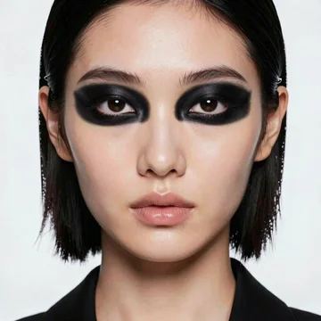
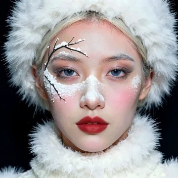
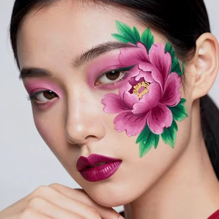
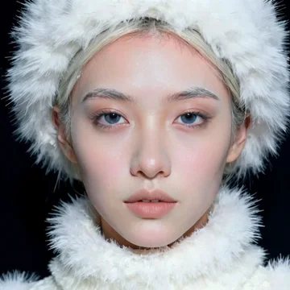
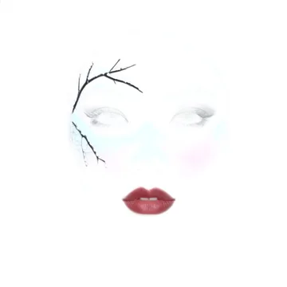
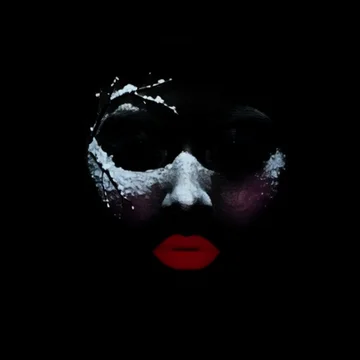
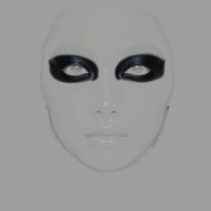
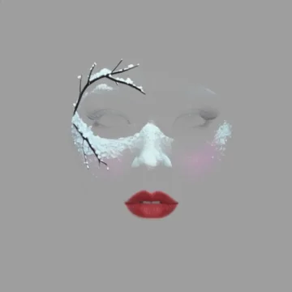
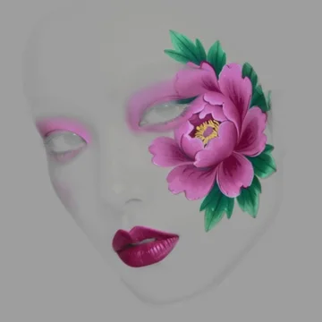
One step of the decomposer predicts the bare face and the makeup over white and black; triangulation matting turns them into a reusable layer (coverage and color).分解器一步预测素颜以及白底和黑底上的妆容；三角测量抠图将它们转换为可复用的图层（覆盖度和颜色）。分解器一步預測素顏、白底妝與黑底妝，以三角測量摳圖得到可重用的圖層（覆蓋率與顏色）。分解器は1ステップで、すっぴんと白背景・黒背景上のメイクを予測します。三角測量マッティングでこれらを再利用可能なレイヤー（カバレッジと色）に変換します。분해기는 한 단계로 민낯과 흰 배경 및 검은 배경 위의 메이크업을 예측합니다. 삼각 측량 매팅으로 이를 재사용 가능한 레이어(커버리지와 색상)로 변환합니다.
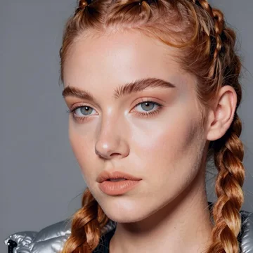
Each layer is aligned to the source face; eyes, lips and face paint can come from different references, and color, opacity and position stay adjustable.每个图层都对齐到原图人脸；眼妆、唇妆和彩绘可以来自不同参考图，颜色、不透明度和位置仍可调整。每個圖層對齊到原圖人臉；眼妝、唇妝與彩繪可取自不同參考，顏色、透明度與位置仍可調整。各レイヤーは元の顔に位置合わせされます。アイ、リップ、フェイスペイントは別々の参照画像から取れ、色、不透明度、位置も調整できます。각 레이어는 원본 얼굴에 정렬됩니다. 눈, 립, 페이스 페인팅은 서로 다른 참조 이미지에서 가져올 수 있고, 색상, 불투명도, 위치도 조절할 수 있습니다.
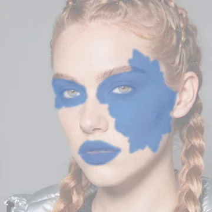
Morphological operations on the layers give the editable region Ω, so the renderer cannot touch the background, hair or unrequested parts.对图层进行形态学运算得到可编辑区域 Ω，因此渲染器不会改动背景、头发或未指定的部位。對圖層做形態學運算得到可編輯區 Ω，渲染不會動到背景、頭髮或未指定的部位。レイヤーにモルフォロジー演算を施して編集可能領域 Ω を求めるため、レンダラーは背景、髪、指定していないパーツに触れません。레이어에 형태학 연산을 적용해 편집 가능 영역 Ω를 얻으므로, 렌더러는 배경, 머리카락, 요청하지 않은 부위를 건드리지 않습니다.
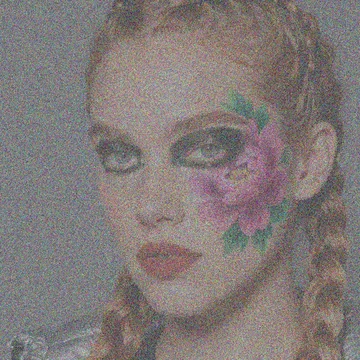
The renderer sees the paste, the full reference layers and the face, repairs warping gaps and lost makeup, and adapts the look to the source lighting in a single step.渲染器同时看到粘贴结果、完整的参考图层和人脸，修补变形产生的缝隙和缺失的妆容，并在一步内使妆容适应原图光照。渲染器同時看貼上結果、完整參考圖層與人臉，修補對齊縫隙與缺漏的妝，並在一步內讓妝容符合原圖光線。レンダラーは貼り付け結果、参照画像のレイヤー全体、顔を同時に見て、ワープによる隙間や欠けたメイクを補修し、1ステップでルックを元の写真の照明に合わせます。렌더러는 붙여 넣은 결과, 전체 참조 레이어, 얼굴을 함께 보고 워핑으로 생긴 틈과 빠진 메이크업을 보완하며, 한 단계 만에 룩을 원본 사진의 조명에 맞춥니다.
The render is returned as a layer over the source, so strength, color and parts stay editable in closed form, with no further network evaluation.渲染结果以覆盖在原图上的图层形式返回，因此强度、颜色和部位都可以用闭式解继续编辑，无需再运行网络。渲染結果以圖層形式回傳，強度、顏色與部位仍可用封閉解編輯，不需再跑模型。レンダリング結果は元の写真に重なるレイヤーとして返されるため、強さ、色、パーツを閉形式で編集でき、ネットワークを再度評価する必要はありません。렌더링 결과는 원본 사진 위의 레이어로 반환되므로 강도, 색상, 부위를 닫힌 형식으로 편집할 수 있으며 네트워크를 다시 실행할 필요가 없습니다.
See the full method figure (paper Figure 4)查看完整方法图（论文 Figure 4）查看完整方法圖（論文 Figure 4）手法の全体図を見る（論文 Figure 4）전체 방법 그림 보기(논문 Figure 4)
Layer decomposition图层分解圖層分解レイヤー分解레이어 분해
A bare, white and black canvas predicted together determines coverage and color, so each reference is decomposed once. Training includes a harmonization cycle.同时预测素颜、白底和黑底画布，由此确定覆盖度和颜色，因此每张参考图只需分解一次。训练中包含协调循环。同時預測素顏、白底與黑底，由此解出覆蓋率與顏色，每張參考只需分解一次。訓練時加入協調循環。すっぴん、白背景、黒背景のキャンバスを同時に予測することでカバレッジと色が決まるため、参照画像ごとの分解は1回で済みます。学習には調和化サイクルを含めています。민낯, 흰 배경, 검은 배경 캔버스를 함께 예측해 커버리지와 색상을 결정하므로 참조 이미지마다 한 번만 분해하면 됩니다. 학습에는 하모나이제이션 사이클이 포함됩니다.
Composition and rendering组合与渲染組合與渲染組み合わせとレンダリング조합과 렌더링
Selected layers are warped and composed on the source, then rendered in one Euler step, supervised by self-transfer through another face. Source pixels outside the editable region are kept and the layer is returned.选中的图层经变形后合成到原图上，再用一步 Euler 渲染，并通过借助另一张脸的自迁移进行监督。可编辑区域之外的原图像素保持不变，并返回图层。選取的圖層對齊並合成到原圖上，再以一步 Euler 渲染，以經由另一張臉的自我轉移監督訓練。可編輯區外的原圖像素保持不變，並回傳圖層。選択したレイヤーをワープして元の写真に合成し、Euler 1ステップでレンダリングします。学習では、別の顔を経由した自己転写を教師信号とします。編集可能領域外の元のピクセルは保持され、レイヤーが返されます。선택한 레이어를 워핑해 원본 사진에 합성한 뒤 Euler 한 단계로 렌더링하며, 다른 얼굴을 거치는 자기 전이로 지도 학습합니다. 편집 가능 영역 밖의 원본 픽셀은 유지되고 레이어가 반환됩니다.
Layer anatomy图层构成圖層構成レイヤーの構成레이어 구성
Coverage and color separate the design from the skin, from daily washes to heavy face paint.覆盖度和颜色将设计与皮肤分开，从日常淡妆到浓重彩绘都适用。覆蓋率與顏色把設計和皮膚分開，從日常淡妝到厚重彩繪都適用。カバレッジと色によってデザインと肌が分離されます。薄いデイリーメイクから濃いフェイスペイントまで対応します。커버리지와 색상이 디자인을 피부와 분리하며, 옅은 데일리 메이크업부터 진한 페이스 페인팅까지 적용됩니다.
Effect of rendering渲染的效果渲染的效果レンダリングの効果렌더링의 효과
Compared with pasting the reference layer flat over the skin, rendering keeps the design more coherent on the new face.与把参考图层直接平贴在皮肤上相比，渲染能让设计在新的人脸上更加协调。相較於把參考圖層平貼在皮膚上，渲染讓設計在新臉上更連貫。参照レイヤーを肌の上に平坦に貼り付ける場合と比べて、レンダリングすると新しい顔の上でデザインがより自然にまとまります。참조 레이어를 피부 위에 평평하게 붙이는 것보다, 렌더링하면 새 얼굴에서 디자인이 더 자연스럽게 어우러집니다.
04 / Decomposition
Decomposition of real photographs真实照片的分解真實照片的分解実写真の分解실제 사진의 분해
The decomposer runs once on each photograph and splits it into a bare face and a makeup layer. Face paint, stickers, rhinestones and lip color move to the layer, while hair, accessories, colored contact lenses and the background stay in the bare face. The layer is drawn over a checkerboard where it is transparent.分解器对每张照片只运行一次，把它拆成素颜和妆容图层。彩绘、贴纸、水钻和唇色进入图层，头发、配饰、彩色隐形眼镜和背景则留在素颜中。图层透明的部分以棋盘格显示。分解器對每張照片只執行一次，把它拆成素顏和妝容圖層。彩繪、貼紙、水鑽和唇色進入圖層，頭髮、配件、彩色隱形眼鏡和背景則留在素顏中。圖層透明的部分以棋盤格顯示。分解器は各写真に1回だけ適用され、写真をすっぴんとメイクレイヤーに分けます。フェイスペイント、ステッカー、ラインストーン、リップの色はレイヤーに入り、髪、アクセサリー、カラーコンタクト、背景はすっぴん側に残ります。レイヤーの透明な部分はチェッカーボードで示しています。분해기는 사진마다 한 번만 실행되어 사진을 민낯과 메이크업 레이어로 나눕니다. 페이스 페인팅, 스티커, 라인스톤, 립 컬러는 레이어로 들어가고, 머리카락, 액세서리, 컬러 렌즈, 배경은 민낯에 남습니다. 레이어의 투명한 부분은 체커보드로 표시했습니다.
All images are publicly released and used for research purposes only.所有图像均为公开发布的图像，仅用于研究目的。所有影像皆為公開發布的影像，僅用於研究目的。すべての画像は一般に公開されたもので、研究目的でのみ使用しています。모든 이미지는 공개된 이미지이며 연구 목적으로만 사용합니다.
05 / Real photographs
Makeup on real photographs在真实照片上化妆在真實照片上上妝実写真へのメイク실제 사진에 메이크업
The decomposer first removes the makeup each person already wears, and looks from CreativeScene references are then rendered on the recovered bare face; in the last example, every look comes from another real photograph. Only the face changes, and the hair, clothing and background of each photograph are kept. Pick a photograph, then switch between the photograph, the bare face and a look.分解器先卸除每个人原本的妆容，再把来自 CreativeScene 参考图的妆容渲染到得到的素颜上；最后一个例子中的每组妆容都来自另一张真实照片。只有脸部改变，每张照片的头发、衣服和背景都会保留。选择一张照片，再在原照片、素颜和各组妆容之间切换。分解器先卸除每個人原本的妝容，再把來自 CreativeScene 參考圖的妝容渲染到得到的素顏上；最後一個例子中的每組妝容都來自另一張真實照片。只有臉部改變，每張照片的頭髮、衣服和背景都會保留。選擇一張照片，再在原照片、素顏和各組妝容之間切換。分解器はまず各人物がもともとしているメイクを落とし、得られたすっぴんに CreativeScene の参照画像のメイクをレンダリングします。最後の例では、すべてのメイクが別の実写真から取られています。変わるのは顔だけで、各写真の髪、服、背景は保たれます。写真を選び、元の写真、すっぴん、各メイクを切り替えてご覧ください。분해기는 먼저 각 인물이 원래 하고 있던 메이크업을 지우고, 복원된 민낯에 CreativeScene 참조 이미지의 메이크업을 렌더링합니다. 마지막 예시에서는 모든 메이크업이 다른 실제 사진에서 옵니다. 얼굴만 바뀌고 각 사진의 머리카락, 옷, 배경은 유지됩니다. 사진을 고른 뒤 원본 사진, 민낯, 각 메이크업을 전환해 보세요.
All photographs are publicly released portraits used for research purposes only.所有照片均为公开发布的人像，仅用于研究目的。所有照片皆為公開發布的人像，僅用於研究目的。すべての写真は一般に公開された人物写真で、研究目的でのみ使用しています。모든 사진은 공개된 인물 사진이며 연구 목적으로만 사용합니다.
06 / Results
Transfer results and comparisons迁移结果与比较遷移結果與比較転写結果と比較전이 결과와 비교
Saved renders on faces and references not used in training. Pick a source and a reference, then drag to compare or scale the layer.保存的渲染结果，所用人脸和参考图均未参与训练。选择原图和参考图，然后拖动进行对比或调整图层强度。實際渲染結果，人臉與參考都未用於訓練。選擇原圖和參考，再拖曳比較或調整圖層強度。学習に使っていない顔と参照画像で保存したレンダリング結果です。元の写真と参照画像を選び、ドラッグして比較したりレイヤーの強さを調整したりできます。학습에 사용하지 않은 얼굴과 참조 이미지로 저장한 렌더링 결과입니다. 원본 사진과 참조 이미지를 고른 뒤 드래그해서 비교하거나 레이어 강도를 조절해 보세요.
Source原图原圖元の写真원본 사진
Reference参考图參考参照画像참조 이미지
Scaling coverage is a linear blend, so this runs in your browser with no model.调整覆盖度只是线性混合，因此直接在浏览器中运行，无需模型。調整覆蓋率就是線性混合，所以在瀏覽器裡即可完成，不需模型。カバレッジの調整は線形ブレンドなので、モデルなしでブラウザ上で動作します。커버리지 조절은 선형 블렌딩이므로 모델 없이 브라우저에서 실행됩니다.
Comparison with existing methods与现有方法的比较與現有方法的比較既存手法との比較기존 방법과의 비교
Each look takes one part from each of three references. Methods that accept one reference run in sequence, one reference at a time, through their official pipelines.每套妆容从三张参考图中各取一个部位。只接受单张参考图的方法通过官方流程依次处理，每次使用一张参考图。每組妝容各取三張參考的一個部位。只接受單張參考的方法，以官方流程逐張依序執行。各ルックは3枚の参照画像からそれぞれ1パーツずつ取っています。参照画像を1枚しか受け付けない手法は、公式パイプラインで1枚ずつ順番に実行しています。각 룩은 세 장의 참조 이미지에서 부위를 하나씩 가져옵니다. 참조 이미지를 한 장만 받는 방법은 공식 파이프라인으로 한 장씩 순서대로 실행했습니다.
Source原图原圖元の写真원본 사진
References参考图參考参照画像참조 이미지
07 / Benchmark
Quantitative evaluation定量评估定量 評估定量評価정량 평가
Mean scores from the paper. ↑ higher is better, ↓ lower is better. The unedited source is a reference point.论文中的平均分数。↑ 越高越好，↓ 越低越好。未编辑的原图作为参照点。論文中的平均分數。↑ 越高越好，↓ 越低越好。未編輯的原圖作為參照。論文の平均スコアです。↑ は高いほど良く、↓ は低いほど良い指標です。未編集の元の写真を基準点として示します。논문의 평균 점수입니다. ↑는 높을수록, ↓는 낮을수록 좋습니다. 편집하지 않은 원본 사진을 기준점으로 표시합니다.
| Method | ID ↑ | L2-M ↓ | DINO-part ↑ | CLIP-part ↑ | Leak ΔE ↓ | Color ΔE ↓ | Assign ↑ | Time (s) ↓ |
|---|---|---|---|---|---|---|---|---|
| Source | 1.00 | 0.0 | 0.71 | 0.85 | 0.0 | 25.4 | -- | -- |
| EleGANt | 0.73 | 170.8 | 0.73 | 0.87 | 16.7 | 16.9 | 0.51 | 1.0 |
| MAD | 0.62 | 10.3 | 0.73 | 0.87 | 12.3 | 14.9 | 0.55 | 121.8 |
| Stable-Makeup | 0.28 | 472.2 | 0.71 | 0.89 | 23.7 | 17.5 | 0.56 | 15.4 |
| FLUX-Makeup | 0.62 | 248.4 | 0.74 | 0.88 | 20.3 | 17.4 | 0.50 | 97.4 |
| Qwen-Image-Edit | 0.30 | 7794.3 | 0.81 | 0.91 | 34.9 | 18.0 | 0.33 | 261.3 |
| FLUX.2-klein | 0.43 | 2172.5 | 0.76 | 0.89 | 22.0 | 20.5 | 0.27 | 7.0 |
| FRAM | 0.54 | 55.9 | 0.77 | 0.90 | 14.7 | 13.7 | 0.67 | 7.2 |
| MagicMakeup | 0.63 | 109.7 | 0.77 | 0.88 | 22.3 | 13.1 | 0.61 | 245.1 |
| ART | 0.59 | 227.4 | 0.69 | 0.87 | 20.5 | 17.9 | 0.39 | 155.3 |
| IrisMix (warp only) | 0.79 | 11.8 | 0.76 | 0.89 | 6.8 | 9.5 | 0.68 | 2.6 |
| IrisMix (+ rendering) | 0.71 | 15.4 | 0.80 | 0.90 | 15.6 | 8.3 | 0.78 | 3.8 |
| Method | ID ↑ | DINO ↑ | CLIP ↑ | L2-M ↓ |
|---|---|---|---|---|
| Source | 1.000 | 0.424 | 0.587 | 0.0 |
| EleGANt | 0.748 | 0.420 | 0.627 | 412.1 |
| MAD | 0.636 | 0.474 | 0.657 | 11.0 |
| Stable-Makeup | 0.329 | 0.611 | 0.784 | 131.6 |
| FLUX-Makeup | 0.701 | 0.519 | 0.700 | 109.4 |
| Qwen-Image-Edit | 0.484 | 0.624 | 0.752 | 1341.5 |
| FLUX.2-klein | 0.348 | 0.549 | 0.720 | 977.2 |
| FRAM | 0.602 | 0.555 | 0.739 | 68.3 |
| MagicMakeup | 0.677 | 0.574 | 0.727 | 21.4 |
| ART | 0.669 | 0.582 | 0.729 | 51.5 |
| IrisMix (warp only) | 0.924 | 0.486 | 0.661 | 0.0 |
| IrisMix (+ rendering) | 0.866 | 0.509 | 0.681 | 0.6 |
| Method | ID ↑ | DINO ↑ | CLIP ↑ | L2-M ↓ |
|---|---|---|---|---|
| Source | 1.000 | 0.345 | 0.538 | 0.0 |
| EleGANt | 0.747 | 0.375 | 0.607 | 409.3 |
| MAD | 0.663 | 0.405 | 0.617 | 10.5 |
| Stable-Makeup | 0.330 | 0.597 | 0.756 | 137.0 |
| FLUX-Makeup | 0.801 | 0.508 | 0.667 | 128.1 |
| Qwen-Image-Edit | 0.445 | 0.682 | 0.761 | 1220.5 |
| FLUX.2-klein | 0.388 | 0.628 | 0.726 | 72.7 |
| FRAM | 0.595 | 0.582 | 0.720 | 66.8 |
| MagicMakeup | 0.670 | 0.588 | 0.706 | 26.4 |
| ART | 0.525 | 0.658 | 0.746 | 79.4 |
| IrisMix (warp only) | 0.894 | 0.542 | 0.650 | 6.9 |
| IrisMix (+ rendering) | 0.829 | 0.571 | 0.674 | 11.7 |
| Method | Daily L1 | Daily LPIPS | Daily W | Daily K | Comp. L1 | Comp. LPIPS | Comp. W | Comp. K | Time (s) |
|---|---|---|---|---|---|---|---|---|---|
| FLUX.2-klein | 4.38 | 10.40 | 1.54 | 0.89 | 4.15 | 11.13 | 2.18 | 3.29 | 4.4 |
| MAD (256²) | 1.91 | 4.48 | 0.95 | 1.30 | 4.61 | 12.52 | 3.81 | 5.14 | 116.7 |
| Qwen-Layered | 3.84 | 7.86 | 3.38 | 1.57 | 4.74 | 11.58 | 4.36 | 2.17 | 111.9 |
| Stable-Layers | 10.59 | 15.24 | 11.56 | 6.67 | 8.09 | 13.53 | 5.22 | 3.18 | 164.4 |
| IrisMix | 1.62 | 1.71 | 0.35 | 0.20 | 1.88 | 3.08 | 0.89 | 0.73 | 0.45 |
ID: identity similarity to the source. L2-M: pixel error outside the face. DINO / CLIP-part: part similarity to its reference. Leak ΔE: change on parts not requested. Color ΔE: part color error. Assign: share of parts closest to their assigned reference. Time is per look on one RTX PRO 6000.ID：与原图的身份相似度。L2-M：人脸以外的像素误差。DINO / CLIP-part：部位与其参考图的相似度。Leak ΔE：未指定部位的变化。Color ΔE：部位颜色误差。Assign：最接近其指定参考图的部位占比。时间为单张 RTX PRO 6000 上每套妆容的耗时。ID：與原圖的身份相似度。L2-M：臉部以外的像素誤差。DINO／CLIP-part：部位與參考的相似度。Leak ΔE：未指定部位的變化。Color ΔE：部位顏色誤差。Assign：最接近指定參考的部位比例。時間為單張 RTX PRO 6000 上每組妝容的耗時。ID：元の写真とのアイデンティティ類似度。L2-M：顔以外のピクセル誤差。DINO / CLIP-part：パーツと参照画像の類似度。Leak ΔE：指定していないパーツの変化。Color ΔE：パーツの色誤差。Assign：割り当てた参照画像に最も近いパーツの割合。時間は RTX PRO 6000 1枚でのルックあたりの値です。ID: 원본 사진과의 신원 유사도. L2-M: 얼굴 밖의 픽셀 오차. DINO / CLIP-part: 부위와 해당 참조 이미지의 유사도. Leak ΔE: 요청하지 않은 부위의 변화. Color ΔE: 부위 색상 오차. Assign: 지정된 참조 이미지에 가장 가까운 부위의 비율. 시간은 RTX PRO 6000 한 장에서 룩 하나당 소요 시간입니다.
Every baseline is worse on both axes than a point of our curve. Marker area shows edit time.每个基线方法在两个维度上都比我们曲线上的某一点差。标记面积表示编辑时间。每個基線方法都在兩個軸上劣於曲線上的某一點。標記面積代表編輯時間。どのベースラインも、両方の軸で私たちの曲線上のある点より劣ります。マーカーの面積は編集時間を表します。모든 베이스라인은 두 축 모두에서 우리 곡선 위의 어떤 점보다 뒤처집니다. 마커 면적은 편집 시간을 나타냅니다.
08 / Dataset
LayerBeauty datasetLayerBeauty 数据集LayerBeauty 資料集LayerBeauty データセットLayerBeauty 데이터셋
LayerBeauty pairs each made-up portrait with its bare face and an explicit makeup layer, which training an editable layer representation requires. All people in LayerBeauty are synthetic.LayerBeauty 为每张带妆人像配上对应的素颜与明确的妆容图层，这是训练可编辑图层表示所必需的。LayerBeauty 中的人物都是合成的。LayerBeauty 為每張上妝人像配上對應的素顏與明確的妝容圖層，這是訓練可編輯圖層表示所必需的。LayerBeauty 中的人物都是合成的。LayerBeauty は、メイクをした人物写真ごとに、対応するすっぴんと明示的なメイクレイヤーを対にしています。これは編集可能なレイヤー表現の学習に欠かせません。LayerBeauty の人物はすべて合成されたものです。LayerBeauty는 메이크업한 인물 사진마다 해당 민낯과 명시적인 메이크업 레이어를 짝지어 제공합니다. 이는 편집 가능한 레이어 표현을 학습하는 데 꼭 필요합니다. LayerBeauty의 인물은 모두 합성된 인물입니다.
Data construction数据构建資料建立データ構築데이터 구축
Two pipelines, filtered for quality, produce pairs with explicit layers.两条流程经过质量筛选，产出带显式图层的配对数据。兩條流程經品質篩選，產出附明確圖層的配對資料。品質でフィルタリングした2つのパイプラインが、明示的なレイヤー付きのペアを生成します。품질 필터링을 거친 두 파이프라인이 명시적 레이어가 포함된 쌍을 만듭니다.
Paired images and layers成对图像与图层成對影像與圖層対になった画像とレイヤー짝을 이룬 이미지와 레이어
Each example has the made-up portrait, its paired bare face and its makeup layer.每个样本包含化妆人像、与之配对的素颜及其妆容图层。每筆資料包含化妝人像、對應素顏與彩妝圖層。各サンプルには、メイク後のポートレート、ペアのすっぴん、メイクレイヤーが含まれます。각 샘플에는 메이크업한 인물 사진, 짝을 이루는 민낯, 메이크업 레이어가 포함됩니다.
10 / Citation
Citation引用引用引用인용
Copied已复制已複製コピーしました복사됨
@misc{lee2026irismix,
title = {{IrisMix}: Compositional Makeup Transfer and Editing with Layered Diffusion},
author = {Lee, Chia-Ming and Chang, Ming-Ching and Li, Xin and
Shuai, Hong-Han and Liu, Yu-Lun and Hsu, Chih-Chung},
year = {2026},
note = {Preprint},
url = {https://ming053l.github.io/IrisMix/}
}